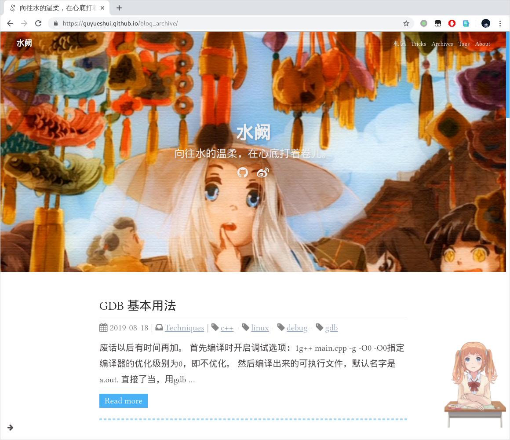

终于还是干了！很早以前就有了这个想法，起初使用Hexo搭的博客，折腾了一段时间，选了一个不错的主题Melody。一切都进行的很好，直到有一天又发现Hugo这么个东西，登时就忍不住了，不是说原来的不好，二十Hugo太特么快了，无论是渲染速度还是博客生成，几乎就像是在本地打开html一样。相比之下Hexo的生成速度就显得很慢了，思来想去，博客应该更多关注内容，之前那个配置的有些花哨了，现在换了Hugo，也使用了一个比较简单的主题，相比之下更轻量，打开速度更快，以后就该专注于内容了。这里烧纸纪念下一下我之前的皮肤：

如你所见，还可以在 https://guyueshui.github.io/blog_archive 访问它，但以后的更新还是主要在现在这个博客上。
这里简单记录一下迁移过程中遇到的一些问题。
Frontmatter 不匹配
Hexo博文的frontmatter格式如下
---
title: GDB 基本用法
date: 2019-08-18 16:14:24
categories: Techniques
tags:
- debug
- linux
- gdb
- c++
---而Hugo博文的frontmatter如下
---
title: GDB 基本用法
date: 2019-08-18 16:14:24
categories: [tech]
tags: ['debug', 'linux', 'gdb', 'c++']
---还好我的文章不算多，一个个改吧！
时间格式
Hexo的时间格式很简单：2006-01-02 15:04. 但是Hugo的时间格式就比较麻烦了。默认模板archetypes/defalut.md中定义的frontmatter如下：
---
title: "{{ replace .Name "-" " " | title }}"
date: {{ .Date }}
---先不管title，默认的.Date变量生成出来的时间格式是这样的：2006-01-02T15:04:59-0700, 看着怪难受的。我想让它变得简单直观一些，于是改成如下格式：
---
title: "{{ replace .Name "-" " " | title }}"
date: {{ dateFormat "Mon Jan 2 2006" .Date }}
lastmod: {{ .Date }}
---使用dataFormat函数将输出格式转换成喜欢的格式，所有支持的格式参见Hugo文档1。这里我将它转换成“Mon Jan 2 2006”这种格式，但是它丢失了时间信息，所以我加了一个lastmod表示最后更改日期，而且没有做格式转换。
注意：貌似是Go语言的原因，Go语言所有的时间计算都是有一个基准的，这个基准时间就是：
2006-01-02 15:04:05 0700, 所有日期的格式设置都要根据这个时间来设，否则就会计算出错误的时间。至于为什么？可能是因为它比较好记：1月2日3点4分5秒6年7时区。开个玩笑:)
公式渲染
这个我是真的头大，这是先前阻止我转Hugo的唯一理由。Hexo那边有专门的插件解决这个事情，而且可以配置markdown解析规则，因此比较完美的解析出公式段并正确渲染。但Hugo貌似就要自己动手了，之前也在网上找了很多解决方案，要么是主题自带，要么是手动添加mathjax支持到head里面。这样所有的页面都会加载mathjax，但是还是避免不了解析错误的问题：比如在markdown里面_可以表示斜体的开头，但在LaTeX里面表示下标。诸如此类的字符冲突还有很多，如果不能自定义markdown的解析规则，那么就会导致有些公式无法正常渲染。另外我也试过KaTeX+mmark的方案，未果。
到目前为止，我还是没有找到满意的解决方案。现在用的是even主题自带的mathjax，所以可能还是会有一些公式无法正常渲染(ﾟДﾟ≡ﾟдﾟ)!?
自定义字体
有了之前在Melody主题自定字体的经验，这次修改字体没有太费什么功夫。主要将主题的font-family改一下，以及将对应的字体放到网站中去。
//! file: themes/even/src/css/_variables.scss
// Font family of the site.
$global-font-family: Linux Libertine O, 'Source Sans Pro', 'Helvetica Neue', Arial, sans-serif !default;
// Serif font family of the site.
$global-serif-font-family: Linux Biolinum O, Athelas, STHeiti, Microsoft Yahei, serif !default;Even主题还是比较好的，将serif和sans分成了两族，这应该是很自然的。之前Melody里面只能设置全局，一换所有字体都换了，也可能是我不会换orz. 可以看到这里可以自定义字体族，我只是在前面加了两个而已，
- serif：Linux Libertine O
- sans: Linux Biolinum O
这两个字体我十分推荐，源于SICP的排版字体，非常耐看！Sans用于标题等粗文本，serif用于排版正文。关于字体名字的获得：
$ fc-list | grep Linux
/home/yychi/.local/share/fonts/Libertine/LinLibertine_RBI.otf: Linux Libertine O:style=Bold Italic
/home/yychi/.local/share/fonts/Libertine/LinLibertine_DR.otf: Linux Libertine Display O:style=Regular
/home/yychi/.local/share/fonts/Libertine/LinLibertine_RI.otf: Linux Libertine O:style=Italic
/home/yychi/.local/share/fonts/Libertine/LinBiolinum_R.otf: Linux Biolinum O:style=Regular
/home/yychi/.local/share/fonts/Monaco_Linux.ttf: Monaco:style=Regular然后将字体文件复制到博客根目录的static/fonts/Libertine文件夹，这样hugo生成网站的时候就会把字体文件一并获得。最后在_variables.scss或_custom.scss中设置一下字体目录就行了。
@font-face {
font-family: Linux Libertine O;
src: url("/fonts/Libertine/LinLibertine_DR.otf");
}
@font-face {
font-family: Linux Biolinum O;
src: url("/fonts/Libertine/LinBiolinum_R.otf");
}另外可以使用Google Font API直接使用字体而不用下载字体文件
因为中文字体文件一般比较大，而且放在Github上加载很慢，所以如果有线上字体可以用，自然优先考虑。之前我只换了英文字体，中文还保留着黑体。于是乎中文sans西文serif放在一起非常不协调。最后还是折腾一下，把中文字体也给换了。
具体方法很简单，找到主题定义字体的地方：
//! file: themes/even/src/css/_variables.scss
// Font family of the site.
$global-font-family: 'Linux Libertine O', 'Noto Serif SC', 'Source Sans Pro', 'Helvetica Neue', Arial, sans-serif !default;这里我将西文优先选择Linux Libertine O字体，而中文则使用Noto Serif SC字体。
注意：这里的在线字体必须是存在于Google Fonts里面的字体。
然后就是在网页上添加一个表单2：
<html>
<head>
<link rel="stylesheet"
href="https://fonts.googleapis.com/css?family=Tangerine">
<style>
body {
font-family: 'Tangerine', serif;
font-size: 48px;
}
</style>
</head>
<body>
<div>Making the Web Beautiful!</div>
</body>
</html>由于主题的head.html在每个网页都会调用，所以我将表单直接添加到该文件中：
<!-- file: even/layouts/partials/head.html -->
{{ range .Site.Params.customCSS -}}
<link rel="stylesheet" href="{{ "/css/" | relURL }}{{ . }}">
{{ end }}
<!-- Insert style sheet here -->
<link rel="stylesheet"
href="https://fonts.googleapis.com/css?family=Noto+Serif+SC">这样一来，网站就会加载来自Google Font API的线上字体，如下图：

图片和表格居中
因为Even主题默认是居左的，所以这里改为居中3。
//! file: themes/even/src/css/_partial/_post/_content.scss
// 图片居中
img {
display: inline-block;
max-width: 100%;
/* make img centerd @yychi */
height: auto;
padding: 0.6em 0;
position: relative;
left: 50%;
-webkit-transform: translateX(-50%); // for Safari and iOS
-ms-transform: translateX(-50%); // for IE9
transform: translateX(-50%);
}
// 表格居中
.table-wrapper {
overflow-x: auto;
> table {
max-width: 100%;
margin: 0 auto; // make table centered @yychi
border-spacing: 0;
box-shadow: 2px 2px 3px rgba(0,0,0,.125);
thead {
background: $deputy-color;
}
th, td {
padding: 5px 15px;
border: 1px double $content-table-border-color;
}
tr:hover {
background-color: $deputy-color;
}
}
}部署
Hugo的部署，没有Hexo那样一步到位，每次都要手动操作。以至于一开始载了很多跟头。按照Hugo中文文档中的方法试了不行（好像坊间流传Hugo的文档写的不行），于是去翻英文文档。对照着做，其实还好，没那么困难。就是一开始走了点弯路，因为我的blog仓库并不是空的，之前的Hexo生成的网站还在。所以走流程的时候出了一些问题，各种文件冲突。后来干脆将Hexo page部署到另一个仓库，将blog仓库清空。然后按照流程走，终于走完了。
其实还有一个问题，一开始我Hugo设置了输出markdown源文件，Hugo会把它放到生成博文的同目录下，原本只有一个index.html, 现在多了一个index.md. 我想这很好啊，不用另外开一个仓库保存原始的md文件了，但是部署上去，github报错，说生成的md文件里有语法错误，网站构建失败。没办法，现在不想折腾了，就在Hugo中把这个选项关了。
部署过程参考文档即可：Host on Github. 我还是大致翻译一下吧：
- 在你的Github上新建一个仓库，假设叫
blog. 这个仓库将用来存放Hugo工程文件，也就是你本地的Hugo site根目录。 - 在你的Github上创建仓库
<username>.github.io，其中<username>为你的Github账户名，这个仓库将用来存放Hugo生成的整个网站。如果你已经有这个仓库了，清空之。 git clone git@github.com:<username>/blog.git && cd blog- 将你的本地Hugo文件夹复制到
blog中去，确保你的网站可以在本地正常运作（使用hugo server或hugo --config <your-config>.toml server）然后访问localhost:1313 - 如果你觉得网站已经符合你的预期了：
- 按下Ctrl+C终止本地服务
rm -rf public删除整个public文件夹，不用担心，你总可以使用hugo --config <your-config>.toml来生成它
- 将
<username>.github.io添加为本仓库的submodule, 这样一来public文件夹下的内容就会推送到<username>.github.io这个仓库。使用如下命令来完成：git submodule add -b master git@github.com:<username>/<username>.github.io.git public - 使用
hugo --config <your-config>.toml来生成你的网站，生成的文件将在public文件夹下 - 进入
public文件夹，使用git完成推送
注意：此前需要在你的Hugo配置文件中更改相应的
baseURL. 例如，更改为baseURL = "https://<username>.github.io"
近日，又发现一个比较好的迁移指引4，文章十分翔实。